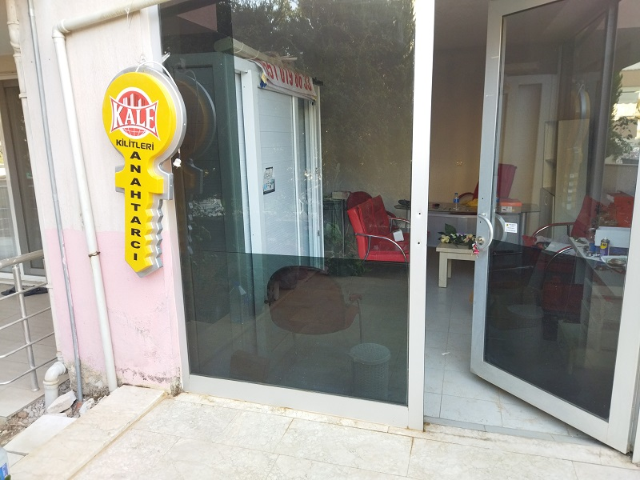

Denizli Çilingir Fiyatları
Uygun Fiyatlarla Kapı Açma ve Kilit Değişimi Hizmetleri
Hızlı Servis

Denizli Çilingir'e olan güvenimiz tam! EN yakın çilingir ile Her zaman hızlı ve profesyonel bir hizmet alıyoruz. Anahtarlarımı kaybettiğimde bile, çilingir ekibi sorunu hızla çözüyor ve kapımı güvenli bir şekilde açıyor. Kesinlikle tavsiye ederim!
Ali A. - Denizli Çilingir Müşterisi
Otomobilimin anahtarını içeride unuttuğumda Denizli Oto Çilingir'i aradım. Hızlı bir yanıt ve profesyonel bir hizmetle karşılaştım. Arabamı zarar vermeden açtılar. Harika bir deneyim, teşekkür ederim!
Ayşe B. - Oto Çilingir Hizmeti Kullanan
Denizli Çilingir, uygun fiyatlarla kapı açma hizmetinin yanı sıra, güvenliğinizi artırmak için harika öneriler sunuyor. İşyerimizin güvenliğini artırmak için bize yardımcı oldular ve sonuçlar mükemmel!
Mehmet K. - Güvenlik Danışmanlığı Alanında Destek
Anahtarınızı kaybettiğinizde veya kapınız kilitlendiğinde, size hızlı ve etkili bir şekilde yardımcı oluyoruz. Denizli'nin her noktasına ulaşarak, kapınızı açıyoruz.
Arabanızın anahtarını kaybettiğinizde veya içeride unuttuğunuzda, oto çilingir hizmetlerimizle size bir telefon kadar yakınız. Tüm marka ve modellere hızlıca müdahale ediyoruz.
Eski veya zarar görmüş kilitleriniz mi var? Endişelenmeyin! Uygun fiyatlarla kilit değiştirme ve onarımı hizmetlerimizle, güvenliğinizi sağlamlaştırıyoruz.